Curso Flores de Bach
Calendario y contenido del curso
MARZO
0.0 CALENDARIO Y CONTENIDO
0.1 Eduard bach vida y esencias florales
0.2 Los cinco principios de dr bach
0.3 Qué son las esencias florales
0.5 Los 12 sanadores y los 7 ayudantes
ABRIL
1.0 MIEDO Y TEMOR
1.1 Grupo del miedo y temor ROCK ROSE
1.2 Grupo del miedo y temor MIMULUS
1.3 Grupo del miedo y temor CHERRY PLUM
1.4 Grupo del miedo y temor ASPEN
1.5 Grupo del miedo y temor RED CHESTNUT
MAYO
2.0 DUDA O INCERTIDUMBRE
2.1 Grupo de la duda o incertidumbre CERATO
2.2 Grupo de la duda o incertidumbre SCLERANTHUS
2.3 Grupo de la duda o incertidumbre GENTIAN
2.4 Grupo de la duda o incertidumbre GORSE
2.5 Grupo de la duda o incertidumbre HORNBEAM
2.6 Grupo de la duda o incertidumbre WILD OAK
JUNIO
3.0 FALTA DE INTERÉS
3.1 Grupo de falta de interés CLEMATIS
3.2 Grupo de falta de interés HONEYSUKLE
3.3 Grupo de falta de interés WILD ROSE
3.4 Grupo de falta de interés OLIVE
3.5 Grupo de falta de interés WHITE CHESTNUT
JULIO
3.6 Grupo de falta de interés MUSTARD
3.7 Grupo de falta de interés CHESTNUT BUD
4.0 SOLEDAD
4.1 Grupo de la soledad WATER VIOLET
4.2 Grupo de la soledad IMPATIENS
4.3 Grupo de la soledad HEATHER
SEPTIEMBRE
5. HIPERSENSIBILIDAD
5.1 Grupo de la hipersensibilidad AGRIMONY
5.2 Grupo de la hipersensibilidad CENTAURY
5.3 Grupo de la hipersensibilidad WALNUT
5.4 Grupo de la hipersensibilidad HOLLY
OCTUBRE
6.0 DESÁNIMO
6.1 Grupo del desánimo LARCH
6.2 Grupo del desánimo PINE
6.3 Grupo del desánimo ELM
6.4 Grupo del desánimo SWEET CHESTNUT
NOVIEMBRE
6.5 Grupo del desánimo STAR OF BETHLEHEM
6.6 Grupo del desánimo WILLOW
6.7 Grupo del desánimo OAK
6.8 Grupo del desánimo CRAB APPLE
DICIEMBRE
7.0 EXCESIVO INTERÉS
7.1 Grupo excesivo interés CHICORY
7.2 Grupo excesivo interés VERVAIN
7.3 Grupo excesivo interés VINE
7.4 Grupo excesivo interés BEECH
7.5 Grupo excesivo interés ROCK WATER
ENERO
8.0 RESUMEN
8.1 Rescue remedy
8.2 Los dos métodos de obtención de tinturas
8.3 Elaboración de las fórmulas y número de remedios
8.4 Dosificación
8.5 Conservación
8.6 Reglas para hacer un tratamiento
1. EDUARD BACH: VIDA Y ESENCIAS
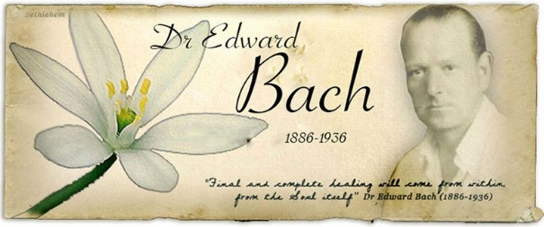
El doctor Bach, creador del sistema floral inglés, hizo aflorar en occidente un conocimiento perdido siglos atrás, y que podemos encontrar en culturas ancestrales de todo el mundo: el uso de la energía de las flores en el cuidado de la salud. La salud entendida como bienestar que se propicia desde el equilibrio emocional y de ahí, se extiende al cuerpo físico.
Edward Bach nació el 24 de septiembre de 1886 (igual que Alfonso XIII) en Moseley, al sur de la ciudad de Birmingham, en la región inglesa de West Midlands (Inglaterra).
Durante su infancia, Bach iba a menudo al campo. Era un muchacho intuitivo, muy sensible a su entorno y le encantaba pasear entre los árboles, los pájaros y las flores silvestres, desde niño sintió un gran amor por la naturaleza. Sin embargo, la belleza natural del campo contrastaba enormemente con la ciudad de Birmingan, enclave fabril que se consieraba la cuna de la revolución industrial.
Tras terminar su formación escolar Bach empezó a trabajar en la fundición de latón de su padre. Su familia era de clase media alta y él era el heredero de la empresa así que, comienza a trabajar en la industria junto a su padre. Había descartado su sueño infantil de ser médico, pués veía que no podía pedir a sus padres que costearan sus estudios de medicina.
Sin embargo, el joven Eduard no lograba adaptarse al ruido constante y las condiciones claustrofóbicas del entorno de trabajo en la fundición. A pesar de todo, en aquél contexto industrial encontró una inspiración muy diferente. Eduard Bach era un perspicaz observador de las emociones y vió como afectaban las emociones a los trabajadores. El miedo a la enfermedad era tan importante como la propia enfermedad, pués un hombre enfermo no podía trabajar y tampoco pagar facturas médicas de importes desorbitados, además los remedios administrados no hacían más que ocultar los síntomas.
Finalmente, a los 20 años, con la aprovación de la familia deja la fundición para centrarse en su pasión por aliviar el sufrimiento humano y su padre le ayuda a ingresar en la universidad de Birmingan para estudiar la carrera de medicina.
En 1912, seis años después, se traslada a Londres para terminar su formación con éxito, compaginando sus estudios con diversos trabajos que le ayudaron a sufragar económicamente los cursos.
En 1913 trabaja en el Hospital del Colegio Universitario, como oficial médico de urgencias.
En 1914 añadió a su curriculum un diploma en salud pública de Cambrige.
Durante su estancia en el University Colege Hospital investigó sobre la terapia de vacuna en el departamento de bacteriología. Bach descubrió que algunas bacterias intestinales estaban estrechamente relacionadas con las enfermedades crónicas y su sanación, de esta manera desarrolló vacunas a partir de esas bacterias que purificaban el tracto intestinal. Pero aunque el resultado de muchas vacunas le animaban no le convencía el uso de las inyecciones, por el dolor que provocaba el uso de la inyección.
Cuando estalló la Primera Guerra Mundial, Bach ya se había forjado una reputación como doctor y ejerció como médico en la ciudad, ya que las casas grandes se convirtieron en hospitales, y se hace cargo de 400 camas para heridos de guerra. Y allí pudo comprobar:
- Que la misma enfermedad cursaba de forma diferente en función del carácter de la persona que lo padecía.
- Que la enfermedad no era una cosa lineal. Que había algo en la persona que hacía que el resultado no fuera el mismo en todos los casos.
Bach era un adicto al trabajo, trabajaba tantas horas que su ventana en el hospital se conocía como: “La luz que nunca se apaga.”
En 1917 sufrió un colapso en el trabajo con una hemorragia masiva. Le ingresarón rápidamente en el hospital y le extirparon un cáncer ya en estado avanzado, le dieron tan solo 3 meses de vida.
El carácter tenaz de Bach y su determinación hizo que, aún estando débil, volviera a su laboratorio dispuesto a seguir con su investigación el tiempo que pudiese, desafiando todos los pronósticos y sorprenddiendo a todos sus colegas.
En 1918 Bach recibió permiso oficioso para vacunar a las tropas inglesas, como resultado se salvaron miles de vidas. Esto atrajo más pacientes a su consulta privada de la calle londinense Harley Street, donde se encontraba la élite de la profesión.
Finalizada la guerra, dejó el Hospital Universitario para llevar a cabo investigaciones privadas en su propio laboratorio en Nottingham Place (Londres).

Bach conoce a Hahnemann, padre de la homeopatía, ciencia que estudia los rasgos caracterológicos de las personas, y se mete de lleno en esta ciencia y se forma muy bien. Le interesó especialmente el Organon, texto seminal sobre la materia, escrito por el padre de la homeopatía, Samuel Hahnemann. Aunque los descubrimientos de Hahnemann se remontaban a un siglo atrás, a Bach le fascinó que éste también hubiese visto que había una relación entre la toxemia intestinal y la enfermedad crónica.
Bach decidió preparar las bacterias siguiendo métodos homeopáticos para comprobar si esos preparados funcionaban tan bien como las vacunas y el resultado fue un gran éxito, transformando sus vacunas inyectables en gotas orales. Los nuevos remedios, la mayoría intestinales, se conocerían como los 7 Nosodes de Bach. Descubrió que a menudo podía predecir los Nosodes que necesitaría utilizar para un paciente, con tan solo fijarse en el tipo de personalidad.
De 1919 hasta 1922 trabajó como patólogo y bacteriólogo en el Hospital Homeopático de Londres, tras lo cual decide dejar el Hospital Homeopático y gestionar un laboratorio privado en Park Crescent, donde conoce a la radiologa Nora Weeks ella también encuentra fascinante la perspectiva de curación que estaba tomando la investigación de Bach. Más tarde se convertiría en su ayudante, aunque al parecer, la relación más personal entre ambos fue meramente platónica.
Al igual que el doctor Hahnemann (creador de la homeopatía), Edward Bach estaba convencido de que la sanación de las enfermedades se logra de forma individualizada y tomando como base las características mentales o psíquicas más que los síntomas físicos.
El doctor Bach se centró sobre todo en los hábitos y la personalidad de sus pacientes: la forma de hablar, el lenguaje corporal, las actitudes, las emociones predominantes en ellos, y se dio cuenta que se repetían patrones de conducta. A partir de su observación y el conocimiento de sus pacientes a lo largo de los años, consideró que las personas con rasgos parecidos podrían tener una respuesta similar ante los tratamientos terapéuticos. Por otra parte, Edward Bach tenía preferencia por los métodos terapéuticos naturales.
Hacia 1928 está harto de “trabajar con basura” (trabaja con los desechos, heces) y decide buscar una nueva forma de sanación que sea limpia y empieza a buscar. Hacía tiempo que Bach se oponía al uso de bacterias, el producto de la enfermedad como tratamiento. Quería encontrar un equivalente puro y natural a los 7 nosodes bacterianos que había descubierto previamente. Aunque había obtenido muy buenos resultados, se dio cuenta que con los nosodes nada más trataba algunos tipos y enfermedades crónicas y decide investigar en el campo de las plantas porque intuía que por ser formas más puras que las bacterias le permitirían llegar a otros niveles de curación. Por lo que, empezó a experimentar con plantas que pudiesen producir sus efectos.
En septiembre de ese año durante un viaje a Gales, descubrió los tres primeros remedios de su sistema floral: Impatiens, Mimulus y Clematis.
Impatiens

Mimulus

Clematis
Durante su investigación de campo, percibió que las plantas que crecían en lugares soleados tenían una vibración energética mucho más elevada que aquellas que florecían en lugares sombríos y que eran las flores, la parte de la planta con más energía vibracional.
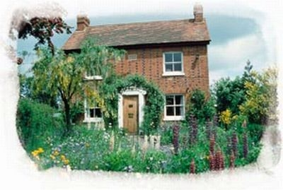
Casa Bach
En 1929 se va al campo y empieza a preparar esencias de flores. Como él no quiere trabajar con veneno propone un tipo de remedio que lo que van a hacer es desarrollar virtudes contrarias al error en el que uno está atrapado. Ejemplo: miedo / valentía. Él sostenía que la persona que sufría de miedo no había que quitárselo, sino impulsar la valentía.
Durante la primavera de 1930 renunció al trabajo en sus laboratorios en Londres para dedicarse a la búsqueda de nuevos remedios. Durante el verano, descubrió un nuevo método de potencialización de los remedios, e intuyó que la auténtica razón por la que enferman las personas reside en su ánimo, en su estado emocional.
«Toda enfermedad«, decía el doctor Bach, «no es más que la manifestación física de un malestar, de un trastorno debido a una condición mental que altera el equilibrio del cuerpo«.
En aquella época se dio cuenta del hecho de que en la naturaleza reina una armonía perfecta y es posible encontrar en ella los remedios necesarios para restablecer el equilibrio, identificando seis flores dotadas de propiedades terapéuticas con las que creó los primeros remedios.
De vuelta en Londres, cerró su consulta, cedió a sus pacientes y el fruto de sus investigaciones a sus colegas, y decidió volver definitivamente a Gales.
Allí, en el silencio armonioso de la naturaleza, utilizando la meditación y el autoconocimiento, desarrolló aún más su gran sensibilidad, lo que le permitió percibir las vibraciones y propiedades curativas de las flores. Las herramientas fundamentales de su investigación no fueron alambiques, ni tubos de ensayo e instrumentos de laboratorio, sino simplemente la intuición.
Escribió el libro «Cúrate a ti mismo«, en el que explicaba cómo la enfermedad corporal puede derivarse de un estado de ánimo negativo que acaba interfiriendo en el equilibrio de la personalidad.
Entre 1931 y 1932, descubrió las 9 flores que junto con las anteriores forman la serie de remedios a la que llamó los 12 sanadores (correspondientes a los 12 tipos de estado emocional): Agrimony, Chicory, Vervain, Water Violet, Centaury, Cerato, Gentian, Scleranthus y Rock Rose, y publicó su primer folleto.
 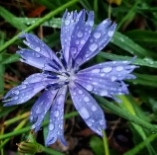 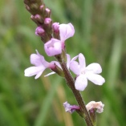
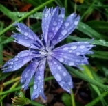 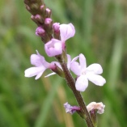
Agrimony Chicory Vervain
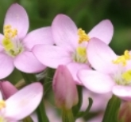 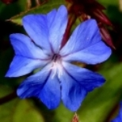
Water Violet Centaury Cerato
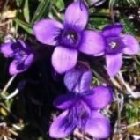 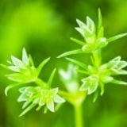 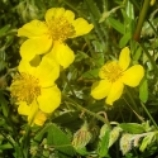
Gentian Scleranthus Rock Rose
Entre 1933 y 1934, descubre 4 flores más en Cromer (Inglaterra) y termina otra serie de 7 esencias florales a las que clasifica como los 7 ayudantes que complementan al primer grupo de 12, para aquellos estados emocionales que han permanecido de forma prolongada en el tiempo (parecen haberse cronificado) lo que dificulta el tratamiento: Estos son: Rock Water, Heather, Gorse, Oak, Olive, Vine y Wild Oat.
 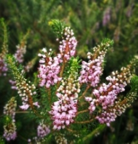
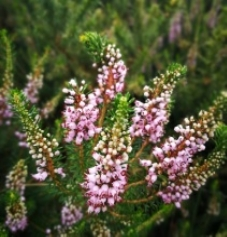
Rock Water Heather
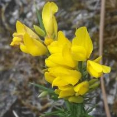 
Gorse Olive
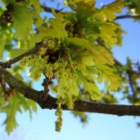 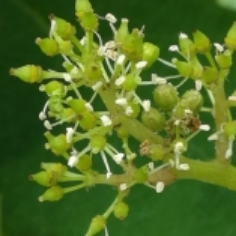
Oak Vine

Wild Oat
Posteriormente, hacia mediados del año 1935, el doctor Bach se trasladó a Sotwell, donde descubrió los otros 19 remedios florales que completaron el grupo de las 38 florales que se conocen en la actualidad y además, demostró que su terapia floral tenía efecto holístico, no era nociva ni tenía efectos secundarios. En este grupo también se incluye al Remedio Rescate (Rescue Remedy).
Bach en 1935 quema su legado y reestructura de nuevo las 38 esencias en 7 áreas temáticas (utiliza una plantilla). Porque quiere que cualquier persona pueda hacer uso del sistema y para que nadie pueda hacer negocio. Lo democratiza, es un remedio para todo el mundo, y ésa fue la intención del Dr. Bach: que el hombre pudiera encargarse de su propia curación.
El doctor Edward Bach falleció a los 50 años, mientras dormía, en Brightwell-cum-Sotwell (Inglaterra), el 27 de noviembre del 1936, dejando cumplido su propósito y sintiendo que su misión en este mundo ya estaba terminada. Fue enterrado en el cementerio del pueblo, muy cerca de Mount Vernon. Había aportado un modelo de terapia que permite liberar los patrones de conducta y de pensamiento inadecuado y que conducen a la aparición de la enfermedad.
Fue enterrado en el cementerio del pueblo, muy cerca de Mount Vernon y en su lápida se grabó la siguiente inscripción:
“Velad porque siga vivo siempre”
Ciertamente a través de sus remedios lo está.
“Observa profunamente la naturaleza, y entonces lo entenderás todo mucho mejor”
“La razón principal del fracaso de la ciencia moderna reside en que trata a los síntomas y no la causa.”
“La verdadera paz del alma y de la mente está en nosotros cuando progresamos espiritualmente,”
2. LOS 5 PRINCIPIOS DEL Dr. BACH
El Dr. Edward Bach creó un sistema terapéutico basado en esencias florales.Sin embargo, dicho sistema se encuentra enmarcado en una filosofía y cosmovisión con influencias orientales y cristianas, las que claramente van mucho más allá de la concepción de enfermedad y salud que se tenía en aquella época.
Él describió que la vida tiene 5 principios:
Primer Principio de Divinidad-Humanidad
Describe que el ser humano tiene una naturaleza combinada: divina y humana. El Alma es el ser real del humano, la chispa divina, perfecta e inmortal. Y el cuerpo es el templo terrenal de esa alma, permite a esa alma (invisible) expresarse en este mundo material.
Segundo Principio de Perfectibilidad Humana
Es una propuesta ética para la vida. Explica que nosotros venimos a esta vida a aprender todo lo que podamos, a obtener conocimiento y experiencia de todo lo que nos muestra el universo que nos rodea (familia, trabajo, país, etc.), y debemos ir siempre hacia el perfeccionamiento de nuestra naturaleza. Somos seres llenos de potencialidades que debemos desarrollar, para llegar a convertirnos en “una luz para quienes nos rodean”.
Tercer Principio de Eternidad-Transitoriedad
Está basado en la inmortalidad del Alma y en el existir (reencarnar) para evolucionar; nuestra vida está inserta en un principio evolutivo mayor de carácter cósmico, atemporal e infinito, cuya meta es siempre la perfección.
Cuarto Principio de Armonía–Salud
Salud implica armonía entre el Alma y la Personalidad. Esto significa que si escuchamos los dictados del alma, tendremos una vida saludable, llena de sentido, y una existencia alegre. La enfermeda se define como la disociación o conflicto entre el alma y la personalidad; es decir, si no escuchamos nuestra voz interior, damos espacio a que surja la enfermedad.
El concepto de enfermedad se enmarca en la dimensión psicosomática del ser humano. Para Bach, la enfermedad tiene su génesis en las profundidades de la psiquis humana, siendo la expresión física, o el síntoma, lo último en presentarse. De esta forma, la enfermedad sería una lección de vida, nos está mostrando un error emocional o mental que la engendró, es decir, una emoción o pensamiento en defecto.
Quinto Principio de la Unidad de Todas las Cosas
Hay un Creador de todas las cosas, que da origen a todo lo existente, eso es el Amor. De ahí se desprende que todas las formas que existen en el Universo son resultado del principio originario: EL AMOR, la fuerza de la unión. Este Amor interrelaciona todo lo existente, ya sea dentro del planeta tierra o con todo el universo.
Bach describe que cometemos dos errores fundamentales que nos generan enfermedad e infelicidad. A nivel personal, atentar contra nosotros mismos al no escuchar la voz de nuestra alma. Y a nivel de la comunidad y el ambiente, atentar contra otros seres humanos, contra los reinos vegetal, animal o mineral, es decir, atentar contra la expresión material que tiene la vida.
La enfermedad, desde este paradigma, surge de lo que provocan las emociones o pensamientos erróneos, ya sea contra nosotros mismos o contra otros. Se trata de un conflicto a nivel emocional o mental que disocia nuestra Alma y nuestra Personalidad.
El rol extraordinario de las esencias florales sería el de permitirnos escuchar la voz de nuestra alma, conectándonos con ella para seguir sus dictados. De esta manera, las esencias florales desplazan el defecto o error y dan paso armoniosamente y con conciencia al desarrollo de la virtud que nos sana.
3. ¿QUÉ SON LAS ESENCIAS FLORALES?
Las esencias son catalizadores de los conflictos del Alma, entendiendo Alma como Ser al completo.
Catalizador: posibilita que se dé una reacción.
Las esencias son informaciones que llegan a nosotros y posibilitan que nosotros tengamos una reacción más alta, que tengamos una mayor conciencia.
Una esencia floral es un mensaje. En realidad, todo el cosmos es información.
Es una idea muy Platónica . Platón nos dice que las ideas existen en el cosmos en forma pura hay un inconsciente colectivo. En verdad, todo está inventado y el genio no es otra cosa que una persona con la capacidad de recoger esa idea del cosmos y plasmarla en la Tierra, pero esas ideas tienen que ser representadas en la materia a través de lo concreto. Así, las flores son una de esas ideas plasmadas en la Tierra.
Una esencia es la información de la idea encarnada extraída de una planta, de una flor, de una semilla. Y con esta información el sujeto resuena o no. No manipula, no fuerza, toca en el sujeto y éste tiene libre albedrío.
Cada planta representa una parte de información de esas infinitas ideas que están en el cosmos.
El agua es conductora de información por eso las esencias van diluidas en agua.
Se basan en la «memoria del agua», en esa característica del agua que el doctor Masaru Emoto describió en sus investigaciones. El agua, H2O, es una molécula polarizada que se estructura con facilidad al entrar en contacto con campos electromagnéticos. En el caso de las flores de Bach, el agua se modifica ante el campo energético de las flores, y el sol, el aire y la tierra (los 4 elementos intervienen en la elaboración de la esencia), y queda impregnada con su vibración, convirtiéndose en la esencia floral.
4. ¿CÓMO ACTÚAN?
La fórmula es un acicate (estímulo positivo que mueve a la persona), pero no pone ni quita nada (no se puede quitar nada que no se tenga.) solo trae la información.
La fórmula hace eco y resuena y hace que yo haga un cambio.
Las esencias florales no actúan directamente sobre el organismo, sino sobre el estado de ánimo, la emoción, el sentir, que fue causante del síntoma en el cuerpo físico/emocional/mental. Y al eliminar la causa, también suprimimos el síntoma, evitando así la enfermedad o la repetición de la misma. Es así de sencillo y de complejo a la vez.
Aunque actúan sobre el estado de ánimo, las esencias florales no funcionan como una droga o como un medicamento, alterando la química de quien las toma y cambiando su estado. No nos «fuerzan» a modificar nuestro sentir, no nos cambian, su efecto es muy sutil. La esencia, al entrar en contacto con el cuerpo, induce su vibración, su energía, y tiene efecto si el cuerpo resuena con dicha vibración. Es decir, actúa por resonancia.
Si resueno con la vibración de la flor, algo en mí percibe el efecto de la esencia y se produce una toma de conciencia, una percepción sutil de algo de lo que no me daba cuenta. Por eso el efecto es tan suave, porque quien cambia soy yo, con mi voluntad. Sólo cambio si quiero hacerlo. Pocas esencias producen reacciones al tomarlas, hay algunas, como por ejemplo, Agrimony, que pueden hacer aflorar emociones densas a las que no queremos dar salida, que preferimos no ver. La flor nos va a poner en contacto con esa emoción para hacerla consciente y somos nosotros los que podemos abordarla o seguir como estamos. Cuando nos resistimos en lugar de resonar con la vibración, puede producirse una reacción adversa, como dolor de cabeza o malestar en personas muy sensibles energéticamente. Esto se puede resolver, preparando el remedio con una combinación de esencias que gradúen el efecto de la principal que queremos trabajar.
Cuando una persona siente miedo o tristeza, se dice que la vibración de esta emoción en el cuerpo está desequilibrada, es decir que no se emite a la frecuencia correcta (como se ilustra en el esquema 1):
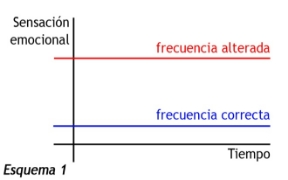
La vibración de la Flor de Bach, emite la frecuencia correcta de dicha emoción. Entonces, cada vez que tomas la Flor de Bach, tu cuerpo recibe la vibración correcta que tendría que sentir esta emoción. las Flores de Bach dan la información correcta de la vibración de la emoción y hace que la persona vuelva por si sola a regularse. Dicho de otra manera, el cuerpo ha perdido la frecuencia correcta de la emoción y crea en la persona un malestar emocional. La persona se siente triste o con mucha rabia pudiendo llegar a afectar su vida personal. Este cuerpo sólo necesita un pequeño estímulo con la vibración correcta para autoregularse e irse a un estado normal (ver esquema 2):
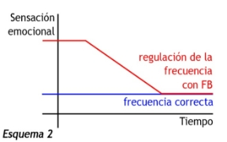
La resonancia hace que vibremos con la energía de la flor y nos abramos a una nueva percepción, fluyendo con ella. La resistencia genera una incomodidad, un roce, es como un tope que podemos atravesar o no. También, podemos observar lo que sentimos ante ella y hacer consciente esa reacción. Tenemos el libre albedrío, ese regalo que nos da la vida, para elegir en cada momento.
Las esencias florales son gotas de conciencia, portadoras de una cualidad, un don, una vibración, que ya está (aunque dormida) en mi interior, esperando a ser despertada. La esencia, me ayuda a «ver» y a darme cuenta, me ayuda a salir de mi estado habitual, me da distancia para ver con perspectiva ese estado que, por ser mi sentir habitual, me parece «lo normal» en mi vida cotidiana.
Toda especie vegetal da forma física a una idea.
Las especies vegetales incorporan diferentes estados de conciencia: no es lo mismo una semilla, que un árbol, que una flor:
- Una semilla es una entidad diminuta de conocimiento de la conciencia de aquello en lo que se convertirá.
- Un árbol es el desarrollo del potencial del conocimiento en su plenitud arrraigado.
- Una flor es la manifestación generosa de ese potencial.
La planta es portadora de una idea entera y concreta y se manifiesta en un arquetipo, entendiendo como arquetipo:
- Una idea patrón.
- Una idea universal completa (lo positivo y lo negativo).
- Es una idea entera.
Como es la planta es el arquetipo. Los arquetipos son modelos de pensar, sentir y actuar presentes en todas las culturas y civilizaciones. Estos quedan recogidos en “el inconsciente colectivo” y pasan de generación en generación. Los arquetipos toman formas concretas en una flor, en una música, en una obra de arte etc. y aparecen en personas, cine, arte, música y en el mundo vegetal.
Así las esencias, que son información, nos permiten desarrollar las virtudes de los arquetipos
Ejemplo: el arquetipo de héroe está compuesto por:
- Valentía.
- Miedo.
Lo que está en positivo está en negativo (en latencia). La esencia va a estimular la parte que está en latencia para fomentar el equilibrio y la salud.
Hay gente muy polarizada en un lado pero eso no significa que no tenga el otro. Esto significa que el cuerpo ha perdido la frecuencia correcta de la emoción.
La flor lo que va hacer es potenciar el extremo que tiene descompensado para equilibrar la emoción en la frecuencia óptima.
Las plantas son herramientas de aprendizaje. Nosotros estamos en la tercera dimension, hemos venido a trabajar y a experimentar la dualidad, ese es el concepto. Y la enfermedad es una distorsión que se crea en los campos energéticos que rodean al cuerpo.
Bach decía: “… los defectos son virtudes colocadas en un momento y lugar equivocados…”
Podemos deducir, entonces, que el miedo contiene en sí la valentía, el odio contiene en sí el amor, la duda contiene en sí la certidumbre, y la angustia contiene en sí la calma. El gran secreto de las esencias florales es que despiertan y desarrollan las emociones que nos sanan (las virtudes), las cuales, al expandirse, invaden las emociones limitantes (los defectos), reduciendolas y, finalmente, haciendolas desaparecer. para facilitar que haya una transformación profunda de algo que está en desequilibrio; una respuesta más acorde con nuestro plan de vida, de modo que si nuestros pensamientos y sentimientos están en armonía nuestro cuerpo físico funcionará al 100%.
Las esencias florales son un remedio natural que incide en la parte emocional y ayuda a reestablecer el equilibrio emocional de las personas a través del médico interno consiguiendo este poder de “autocuración”.
Esto es un proceso sutil y delicado, que conlleva un profundo crecimiento espiritual que va mucho más allá de nuestro cuerpo físico y abarca todos nuestros cuerpos sutiles.
5. LOS 12 SANADORES Y LOS 7 AYUDANTES
En 1929 Nora Weeks, la asistente de Bach en Crickhowell, nos cuenta que él asiste a una cena masónica (ya que él lo era) y que allí se da cuenta de que hay gente muy parecida en su temática (como familias de almas) y es allí donde identifica “Las 12 lecciones del alma1 y entiende que toda persona venimos con una lección fundamental para aprender (karma).
Bach decide buscar Las 12 esencias (Twelve Hecters) 1929/ 32 y las llama: Los 12 sanadores
Estas 12 primeras flores, corresponden a doce Tipos básicos de personalidad congénita, cada uno de ellos tienen un aspecto positivo y otro negativo que tiene que ver con la lección que se ha venido a aprender a este mundo y obedecen a una cualidad determinada del alma humana. Estos tipos de personalidad están indicados por el signo del zodiaco en el que se encontraba la luna en el momento del nacimiento.
Se obtienen por el Método Solar
En la siguiente tabla están las 12 flores tipo (sanadores) por orden cronológico en el que fueron encontradas, el error a superar y la virtud a desarrollar.
REMEDIO | SIGNO
| ERRROR a superar | VIRTUD a desarrollar |
Impatiens | Aries | Dolor/Impaciencia | Perdón |
Mimulos | Capricornio | Miedo | Compasión |
Clematis | Cáncer | Indiferencia | Bondad |
Agrimony | Sagitario | Tormento o tortura mental | Sinceridad |
Chicory | Escorpión | Estancamiento/Desasosiego | Amor |
Vervain | Leo | Entusiasmo/Fanatismo | Tolerancia |
Cerato | Géminis | Duda de sí mismo | Sabiduría |
Centaury | Virgo | Debilidad | Poder |
Scleranthus | Libra | Indecisión | Perseverancia |
Water Violet | Acuario | Distanciamiento | Alegría |
Gentian | Tauro | Falta de valor/Desaliento | Comprensión |
Rock Rose | Piscis | Terror/Desesperación | Valor
|
Bach afirma en “Los Doce Curadores” y en “Libérate a tí Mismo” que en esta vida o encarnación venimos a aprender una o dos lecciones como máximo y para ello nos revestimos de una personalidad congénita o Flor Tipo que contiene el error o el problema a superar. También dice que la toma de la Flor Tipo nos ayudará a poder cumplir con nuestra misión en la vida.
Bach sostiene que la enfermedad aparece cuando me desvío de lo que el alma me dice (si no sigo la lección). El alma me dice una cosa y mi personalidad otra. Por ejemplo: No es lo mismo lo que me gusta que lo que me conviene, en esta disfunción aparece la enfermedad.
Bach pensó que mirando cual era la lección de alma y prescribiendo después el remedio correspondiente la enfermedad de la persona remitiría.
En su libro: “Los remedios florales y sus indicaciones”, publicado en Epson, en 1933 dice:
“Los remedios se prescriben en función del estado de ánimo del paciente, ignorándose por completo la enfermedad física que padece el paciente.”
Pero se da cuenta, de que se puede traer una lección determinada pero dependiendo del entorno de dónde esté, la persona va a tener que crear una forma de relacionarse con los demás. Y crea entonces 7 esencias más que Bach las llama: LOS 7 AYUDANTES (1932-1935) y van a trabajar esos mecanismos que la persona ha generado para relacionarse con el exterior.
Los 7 Ayudantes también los obtendrá por el Método Solar
Los 7 ayudantes (7 Helpers). Son carcasas que tapan al verdadero Ser Espiritual, corresponden a estadios tipo que se han cronificado y son el resultado de la unión del tipo básico de personalidad congénita mezclado con circunstancias de la vida que la hacen aumentar en negativo. Son extructuras que el sujeto ha creado en relación al mundo y las ha cronificado. Son construcciones de largo tiempo.
Cuando se eliminan estas capas entonces se ve la verdadera misión de alma y es cuando se utilizan los 12 sanadores.
Las cronificaciones son mecanismos que uno desarrolla con el paso del tiempo y que están tan fijadas que parecen formar parte de la personalidad.
Bach dice que: “estas personas han perdido mucho de su individualidad y necesitan ayuda para salir del callejón sin salida en el que se han metido”, son personas que están enfermas desde hace tiempo y se han resignado a la idea de que nada se puede hacer o que piensan que lo suyo es constitucional de su propia naturaleza. Son personas que han adaptado su vida a su enfermedad.
Estos siete remedios liberan al paciente de su estado de estancamiento volviéndolos al estado de actividad, recuperando la individualidad y entonces se podrá volver a encontrar cuál es el remedio necesario (de los 12 sanadores) para volver a sanar completamente.
Gorse |
Wild Oat |
Olive |
Heather |
Oak |
Vine |
Rock Water |
|
En su libro “Los Doce Curadores y los Siete Ayudantes”, Bach divide a estos en dos grupos:
o Si el paciente esá pálido: Olive (olivo), Gorse (aulaga), Oak (roble albar)
o Si el paciente tiene buen color o enrojecido el semblante: Vine (vid), Heather (brezo), Rock Water (agua e roca).
El séptimo remedio Wild Oat (avena silvestre) se dará cuando el remedio que parece ser el correcto, sea de los doce o de los seis remedios ayudantes no ha dado ningún resultado.
Este remedio se dará solo para que actúe como catalizador, hará limpieza y así podremos descubrir cuál es el estado en el que está atascado el paciente.
6. LOS 19 ÚLTIMOS REMEDIOS
Las últimas 19 esencias fueron descubiertos en 1935.
Según Bach son los remedios más espiritualizados.
Todos se obtienen por Método de Ebullición, menos White Chestnut porque tiene dos esencias de la misma planta (Bud Chestnut).
Una peculiaridad de éste grupo es que todos son árboles menos los cuatro últimos.
No están relacionadas con una cualidad esencial del alma, ni con ninguna lección que debamos de aprender en esta vida, sino con cosas que pasan en la vida y las diferentes respuestas o maneras de reaccionar ante los problemas que la vida nos presenta.
1-Aspen |
2-Larch |
3-Pine |
4-Elm |
5-Cherry Plum |
6-Red Chestnut |
7-White Chestnut |
8-Chestnut Bud |
9-Sweet Chestnut |
10-Hornbeam |
11-Olive |
12-Heather |
13-Walnut |
14-Crab Apple |
15-Beech |
16-Honey Suckle |
17-Wild Rose |
18-Mustard |
19-Star of Bethlehem |
Lo que yo soy------ 12 sanadores.
La forma en que me muevo-------- 7 ayudantes.
Cómo respondo a lo que me pasa -------- los 19 últimos.
Resumen
Remedios florales “tipo”: 12
Tratan tu personalidad innata.
Remedios ayudantes o “tipo cronificado”
Te sacan del estancamiento.
Remedios circunstanciales: 19
Tratan la respuesta o respuestas del momento.
Rescue Remedy: 1 (contiene 5 remedios)
Para una urgencia.
¿Por qué, según Bach, los últimos remedios son los más espirituales?
Método solar: Aquí la energía viene de arriba, es descendente.
El sol permite que la energía se desprenda en el agua.
Tiene que ver con Pentecostés, el descendimiento del Espíritu Santo sobre los Apóstoles.
Es quitar la costra para sacar la verdadera energía con la que tú has venido a trabajar.
Método de Ebullición: Aquí la energía viene de abajo, del suelo. Tiene que ver con una cocción con fuego.
La combustión de los hidrocarburos libera una energía que ha estado guardada.
En un tiempo los hidrocarburos fueron plantas y árboles vivos.
Movimiento de abajo- arriba para volver al origen (la Ascensión).
Para hacer un proceso de desarrollo hace falta un proceso de rebelión y los árboles son los únicos que se han revelado contra la gravedad.
Los árboles trabajan las trabas que impiden el proceso de desarrollo, el movimiento hacia arriba.
Éstas esencias tienen la dimensión de sacar de dónde te trabas (catalización).
Por eso Bach utilizó la cocción para romper, para quitar la traba.
El síntoma guarda un rastro que enmascara el problema.
Preguntas para ver los síntomas, aunque el diagnóstico es dinámico:
Son pistas para ayudar al otro a abrir su discurso.
Vamos a captar los arquetipos de base de cada esencia de todos los grupos.
Preguntas básicas:
¿Por qué ahora?
¿Por qué ahí?
¿Por qué de esa manera?
Bach dice: “You suffer from yoursulfer”------ “Nosotros sufrimos desde nosotros”